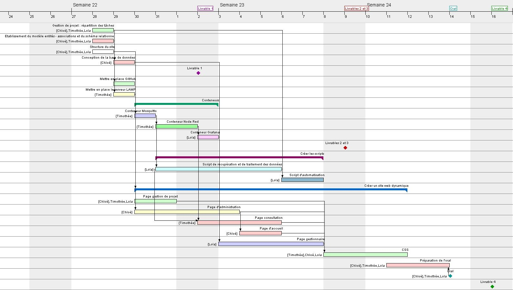
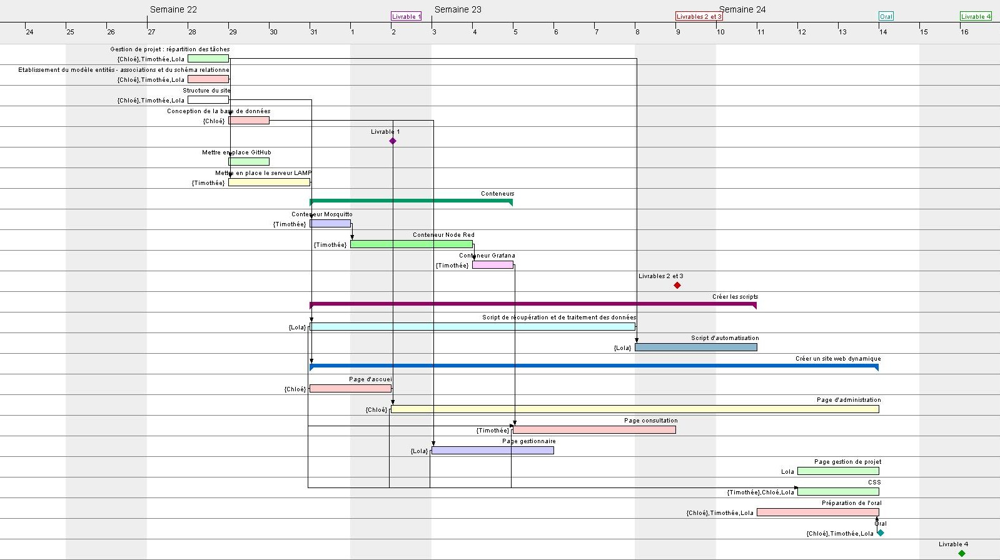
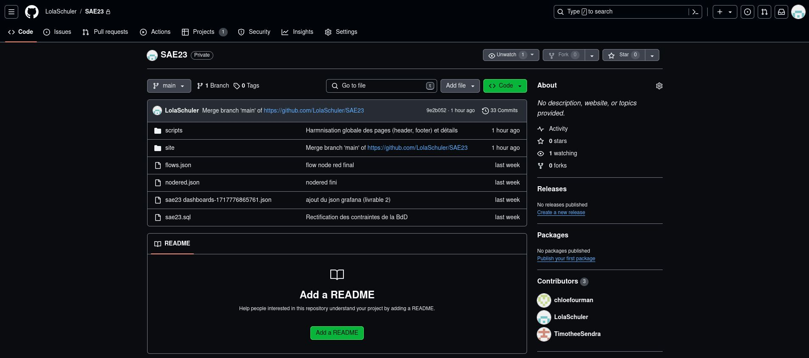
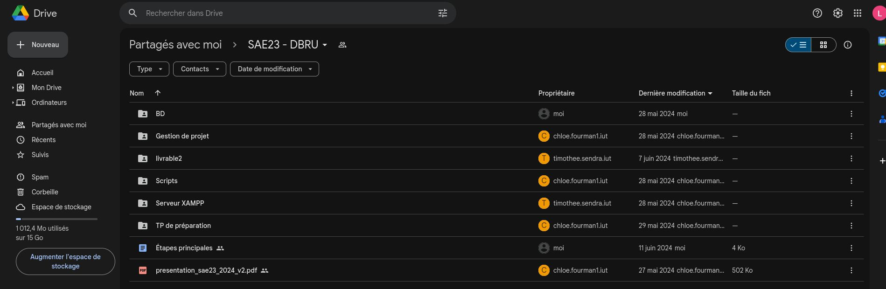
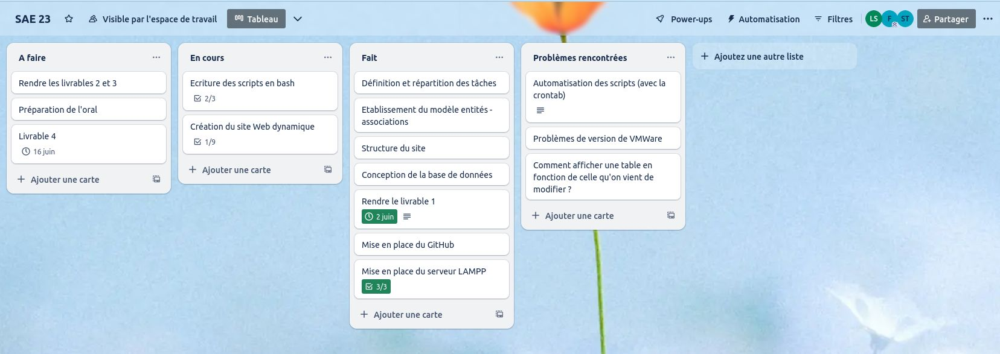

Dans le cadre de la SAE 23, nous avons du mobiliser nos compétences en informatique pour concevoir deux solutions de traitement de données. Nous avons choisi de traiter les données des capteurs de CO2 situés dans les salles B002, B105, E003, et E105.
La première solution implique l'utilisation de NodeRed pour récupérer et traiter les données émises par les capteurs de l'IUT. C'est une solution sans codage, et qui permet la réalisation d'un dashboard Grafana qui offre une belle visualisation des données.
La deuxième solution implique la réalisation de scripts pour récupérer les données et les envoyer sur une base de données MySQL. Nous avons choisi de réaliser ces scripts en Bash. Il nous a également fallu réaliser le site web que voici afin de présenter les résultats de cette solution, avec une partie Consultation qui permet de visualiser sous forme de tableau les dernières données envoyées par les capteurs, une partie Administration qui permet de modifier la base de données en y ajoutant ou supprimant des bâtiments, des salles, ou encore des capteurs, et enfin une partie Gestionnaires qui permet au gestionnaire de chaque bâtiment de visualiser les données envoyées par les capteurs de son bâtiment seulement.
Répartition du travail
Nous nous sommes répartis les différentes tâches en prenant en compte nos préférences mais aussi la charge de travail que chaque tâche représentait.
Ainsi, Chloé s'est chargée de la conception de la base de données et de la partie Administration du site web, ainsi que des pages d'accueil et de mentions légales.
Lola s'est chargée des scripts Bash et de la partie Gestionnaires du site web, ainsi que de la page Gestion de projet.
Quant à Timothée, il s'est chargé des flow et dashboards Nodered et Grafana, ainsi que de la page Consultation du site web.
Après avoir clairement défini les tâches à accomplir, nous avons pu nous projeter dans le temps pour prévoir quelle tâche serait faite à quel moment. A cette fin, nous avons réalisé un diagramme de Gantt qui nous a aidé à visualiser le calendrier des tâches :

Gantt prévisionnel
Cependant, au fur et à mesure du temps, nous nous sommes un peu écartés du calendrier : certaines tâches ont pris plus de temps que ce que nous avions prévu, et d'autres moins. Nous avons consigné ces changements dans un diagramme de Gantt final.

Gantt final
Outils collaboratifs utilisés
Pour pouvoir travailler efficacement nous nous sommes aidés de plusieurs outils collaboratifs qui nous ont aidé à nous organiser ainsi qu'à mettre en commun notre travail :
Github, afin de partager notre travail et de garder trace de notre travail effectué tout au long du projet
Google Drive, afin de se partager et d'organiser les fichiers de brouillon ou de préparation du projet
Trello, qui nous a permis de visualiser facilement les tâches faites et celles à faire

Interface Github

Interface Google Drive

Interface Trello
Synthèses personnelles des membres du groupe
Chloé
Lors de cette SAE, j’ai choisi de principalement m’occuper de la partie gestion de base de données. Ainsi, j’ai créé et initialisé la base de données sur PHPMyAdmin et je me suis occupée des pages “Administration”.
Dans un premier temps, j’ai dû commencer par créer une nouvelle base de données (“sae23”) ainsi qu’un nouvel utilisateur (dans notre cas “CTL” pour Chloé Timothée Lola) associé à la base de données afin de pouvoir créer des tables par la suite.
Une fois les tables initialisées sur PHPMyAdmin, j’ai pu commencer à écrire les pages HTML et PHP d’Administration.
Pour ce faire, j’ai choisi de commencer par initialiser une session grâce à un formulaire ayant pour but de vérifier l’identité de l’utilisateur grâce à un nom d’utilisateur ainsi qu’un mot de passe entrés dans le formulaire qui seront comparés par la suite avec la table “Administration” (contenant les identifiants corrects à utiliser). En effet, grâce à cela, seuls ceux qui ont connaissance de ces identifiants peuvent avoir accès aux pages de gestion de la base de données. En cas de mauvais identifiants entrés, ou bien d’une absence d’information, l’utilisateur sera redirigé vers une page d’erreur de login que nous avons décidé d’utiliser de façon commune à tout le site Web afin d’en simplifier l’arborescence. Ainsi, deux liens principaux apparaissent sur cette page : le retour à l’authentification gestionnaire et le retour à l’authentification administrateur.
En ce qui concerne les pages suivantes, soit celles uniquement accessibles après authentification, j’ai choisi de ne pas faire tous les formulaires sur une seule page mais plutôt de pousser l’utilisateur à suivre un chemin où il choisit ce qu’il veut faire petit à petit. Ainsi, il commence par choisir la table à modifier avant de choisir ce qu’il compte y faire (ajout ou suppression de ligne) et d’être redirigé vers une page qui informe d’une erreur d’exécution (que nous avons en commun entre toutes les pages du site) ou bien qui valide la bonne exécution de la requête et renvoie la table modifiée par la suite.
De plus, j’ai choisi de définir plusieurs valeurs communes notamment pour pouvoir conserver le nom de la table modifiée, les lignes à supprimer ou bien à ajouter, …
Pour ce faire, j’ai commencé par utiliser des méthodes POST, mais je me suis vite retrouvée limitée puisqu’il fallait systématiquement des formulaires avec des variables cachées afin de pouvoir transférer les données à la page suivante. Ainsi, j’ai commencé à utiliser des variables contenues dans la session, ce qui était bien plus simple.
Cependant, j’ai choisi de conserver les deux méthodes réparties sur les pages afin de montrer que les deux peuvent fonctionner ; l’une est juste plus pratique que l’autre.
Pendant l’écriture de ces pages, j’ai décidé de faire la page d’accueil afin de simplifier la navigation sur le site Web. En effet, au début nous devions utiliser les URL précises afin de pouvoir vérifier nos codes, comme il n’y avait aucun lien pour accéder à la première page de nos sections respectives.
De plus, j’ai aussi choisi de faire une brève pause pendant l’écriture de mes pages afin de me consacrer à la génération d’une page sur les mentions légales.
Timothée
Au cours de cette SAE, j’ai pu travailler sur plusieurs sujets. J’ai été chargé de créer des conteneurs Docker, tâche que j’ai pu accomplir assez facilement grâce au TP formatif qui était très utile.
J’ai donc créé 4 conteneurs : Mosquitto, Node-RED, Grafana et InfluxDB. Chacun de ces conteneurs a un nom associé à ses fonctions. Mosquitto : MosquittoRT, Node-RED : NodeRedRT, InfluxDB : InfluxDBRT, Grafana : GrafanaRT. Néanmoins, avant de mettre en place les conteneurs, j’ai configuré le serveur XAMPP que j’ai sécurisé en utilisant un mot de passe différent pour chaque processus, comme phpMyAdmin.
Suite à cela, j’ai pu créer le flow Node-RED dans lequel j’ai récupéré des données sur le broker Mosquitto pour les traiter et extraire uniquement les valeurs de CO2 qui se trouvaient dans un tableau à deux cases. J’ai donc dû écrire un script dans un bloc “fonction” pour trier les différentes données du capteur et ne récupérer que la valeur de CO2 que nous voulions traiter. Par la suite, mon travail a consisté à utiliser InfluxDB pour stocker les données récupérées dans le flow Node-RED dans la base de données InfluxDB.
J’ai aussi pris en charge Grafana, tâche qui devait initialement être réalisée par Lola, mais qui a rencontré un problème avec sa VM et n’a donc pas pu le faire. Le Grafana avait pour but de créer un affichage similaire à celui que nous avions sur le dashboard Node-RED (sous forme de jauge) mais en récupérant les informations depuis la base de données InfluxDB.
Enfin, j’ai réalisé une des pages du site web : la page de consultation, qui avait pour objectif d'afficher les dernières mesures de chaque capteur traitées de façon horodatée.
Lola
Je me suis occupée en premier lieu des scripts en Bash pour récupérer et traiter les données provenant des capteurs et mises à disposition sur le bus MQTT de l'IUT.
J'ai tout d'abord conçu un script de récupération des données en m'inspirant du script que j'avais écrit pour la SAE15, à la fin du premier semestre. Ensuite, j'ai écris un script d'insertion des données dans la base de données MySQL. Après avoir validé séparément le fonctionnement de ces deux scripts avec des capteurs et des valeurs aléatoires, j'ai appliqué leur fonctionnement aux quatre capteurs que nous avons choisi.
Mon premier choix a été de réaliser quatre scripts différents, un pour chaque capteur étudié. J'avais un script qui lançait tous les autres scripts tour à tour, comme je l'avais fait pour la SAE15. Mon premier script récupérait donc de la base de données MySQL la liste des capteurs dans la table Capteur, et la stockait dans un fichier texte.
Le script suivant (qui s'appelait e003_data_extraction) retirait de ce fichier texte le nom du capteur de la salle E003, récupérait du broker MQTT le message de ce capteur et traitait ce message pour n'en récupérer que la valeur du CO2, avant d'appeler le script d'insertion des données en passant la valeur générée par le capteur et le nom du capteur en argument. Les trois autres salles que nous avons choisi avaient chacune leur script, qui fonctionnaient de la même façon.
Le dernier script, celui d'insertion des données, exécutait simplement une requête SQL pour insérer dans la base de données une nouvelle ligne dans la table Mesure, en fonction de la valeur des arguments.
J'ai finalement trouvé cette méthode très peu efficace, puisqu'elle nécessitait un grand nombre de fichiers et s'adaptait très mal : en effet, la partie Administration du site web est censée permettre à un utilisateur de rajouter un capteur de son choix ; or, il faut dans ce cas que les mesures données par le nouveau capteur s'affichent dans la table Mesure. J'ai donc totalement changé l'organisation de mes scripts pour les optimiser au mieux et améliorer leur adaptabilité.
Ma nouvelle solution utilise beaucoup moins de fichiers : j'ai toujours un script dit "de lancement" pour récupérer la liste des capteurs dans la table Capteur de la base de données et la stocker dans un fichier texte, mais au lieu d'avoir quatre scripts (un par capteur) pour récupérer les valeurs générées par les capteurs, je n'ai plus que un script-type, qui s'adapte pour chaque capteur listé dans le fichier texte "capteurs" et envoie directement les données dans la base de données MySQL. Cette nouvelle solution s'adapte donc au nombre de capteurs listés dans la table "Capteur".
Le script de lancement appelle dans une boucle "for" le script de récupération et traitement des données, autant de fois qu'il y a de lignes dans la liste des capteurs. J'ai décidé d'appeler à chaque fois le script de récupération et de traitement des données en arrière-plan, car puisqu'un capteur émet des mesures à une intervalle de 10 minutes, il était sinon possible à chaque itération de la boucle qu'il faille attendre 10 minutes pour récupérer une nouvelle mesure. Puisque la table Capteur comporte au départ 4 capteurs, cela symboliserait une attente éventuelle de 40 minutes pour que le script s'exécute en entier.
Il était donc préférable d'exécuter les scripts de récupération et de traitement des données en arrière-plan, pour que ces scripts s'exécutent en même temps et que l'attente maximale soit réduite à 10 minutes.
J'étais également chargée de la réalisation du dashboard Grafana. Seulement, après avoir récupéré une copie de la VM de Timothée, qui s'était occupé du flow NodeRed et de la base de données InfluxDB, nous nous sommes rendus compte que la base de données InfluxDB ne se remplissait pas correctement sur ma VM. Après avoir tenté de corriger le problème le temps d'une séance de SAE, nous avons décidé de ne pas perdre plus de temps, et j'ai finalement également confié à Timothée la réalisation du dashboard Grafana, puisque le flux NodeRed et la base de données InfluxDB fonctionnaient sur sa VM.
Enfin, je me suis chargée de la partie Gestionnaires du site web. Pour la réaliser, je me suis inspirée du site SMI sur lequel nous avions travaillé en R209, ainsi que de la partie Administration du site web, que Chloé avait déjà bien avancée quand je me suis attaquée à la partie Gestionnaires.
Problèmes rencontrés et solutions proposées
Nous avons rencontré un problème avec les conteneurs qui nous a obligé à changer notre répartition du travail. En effet, après avoir copié la VM de Timothée (sur laquelle étaient installés les conteneurs InfluxDB et NodeRed) sur la machine de Lola, nous avons rencontrés des problèmes avec le remplissage via le flux NodeRed de la base de données InfluxDB. Comme nous avions peur de manquer de temps avant le rendu des livrables 2 et 3 (les conteneurs), nous avons préféré re-répartir le travail : Lola, qui était initialement chargée du conteneur Grafana, en a confié la réalisation à Timothée, car les conteneurs fonctionnaient comme prévu sur sa VM à lui.
Nous avons rencontré d'autres problèmes, plus divers avec les machines virtuelles. Nous avons décidé de tout d'abord créer une machine virtuelle sur laquelle Chloé a installé et configuré la base de données MySQL, puis nous avons fait des copies de cette VM afin que nous disposions tous d'une machine virtuelle viable. Divers problèmes en rapport avec les machines virtuelles se sont cependant posés tout au long du projet : l'une des trois machines virtuelles ne cessait de planter, le terminal d'une autre disparaissait si tôt qu'on bougeait la fenêtre, etc. Comme il s'agissait de problèmes difficilement corrigeables en peu de temps, nous avons tout simplement appris à faire avec.
Enfin, au sein de la partie Gestionnaires du site web, Lola a rencontré un problème en particulier ; elle a eu du mal à conserver la variable $username d'une page à l'autre de la partie Gestionnaires. La solution a été de simplement stocker la variable dans les données de session de l'utilisateur, ce qui permet de conserver les variables tout au long de la session.
Conclusion sur le degré de satisfaction du cahier des charges
Nous sommes satisfaits du travail accompli et estimons avoir rempli le cahier des charges, sans particulièrement le dépasser pour autant ; l'ensemble des solutions proposées fonctionnent.